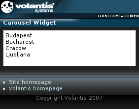

The Carousel widget allows users to select an item from a list that is longer than can be displayed on a device. It presents a subset of a list of content items for a given period of time. At the end of the time period the displayed subset changes.
The carousel contents can be updated with AJAX requests. Refer to Carousel with AJAX for more information.

You have already seen how to construct a template and apply it, so in this task and those that follow, we can focus on the detail of providing the parameter values in the template:binding definitions, and providing additional styling. To simplify the process, why not clone the code from the welcome page, and use it as the basis for further work.
<style type="text/css" media="handheld,all">
widget|carousel {
height: 6em;
padding: 4px;
mcs-transition-interval: 8s;
mcs-effect-style: wipe-top;
mcs-effect-duration: 5s;
}
widget|carousel:mcs-concealed {
mcs-effect-style: wipe-top;
mcs-effect-duration: 5s;
}
</style><widget:carousel class="widget"> <li><a href="http://www.ankara-bel.gov.tr">Ankara</a></li> <li><a href="http://www.beograd.org.yu">Beograd</a></li> <li><a href="http://www.berlin.de">Berlin</a></li> <li><a href="http://www.bratislava.sk">Bratislava</a></li> <li><a href="http://www.budapest.hu">Budapest</a></li> <li><a href="http://www.pmb.ro">Bucharest</a></li> ... </widget:carousel>
Here is the complete code for carousel.xdime.
<?xml version="1.0" encoding="UTF-8"?>
<html xmlns="http://www.w3.org/2002/06/xhtml2"
xmlns:mcs="http://www.volantis.com/xmlns/2006/01/xdime/mcs"
xmlns:template="http://www.volantis.com/xmlns/marlin-template"
xmlns:widget="http://www.volantis.com/xmlns/2006/05/widget">
<head>
<title>Carousel Widget</title>
<link rel="mcs:theme" href="/themes/main.mthm"/>
<link rel="mcs:layout" href="/layouts/main.mlyt"/>
<style type="text/css" media="handheld,all">
widget|carousel {
height: 6em;
padding: 4px;
mcs-transition-interval: 8s;
mcs-effect-style: wipe-top;
mcs-effect-duration: 5s;
}
widget|carousel:mcs-concealed {
mcs-effect-style: wipe-top;
mcs-effect-duration: 5s;
}
</style>
</head>
<body>
<template:apply href="templates/demo-main.xdtpl">
<template:binding name="title" value="Carousel Widget"/>
<template:binding name="content">
<template:complexValue>
<widget:carousel class="widget">
<li><a href="http://www.ankara-bel.gov.tr">Ankara</a></li>
<li><a href="http://www.beograd.org.yu">Beograd</a></li>
<li><a href="http://www.berlin.de">Berlin</a></li>
<li><a href="http://www.bratislava.sk">Bratislava</a></li>
<li><a href="http://www.budapest.hu">Budapest</a></li>
<li><a href="http://www.pmb.ro">Bucharest</a></li>
<li><a href="http://www.krakow.pl">Cracow</a></li>
<li><a href="http://www.ljubljana.si">Ljubljana</a></li>
<li><a href="http://www.nicosia.org.cy">Nicosia</a></li>
<li><a href="http://www.podgorica.cg.yu">Podgorica</a></li>
<li><a href="http://www.prague-city.cz">Prague</a></li>
<li><a href="http://www.rcc.lv">Riga</a></li>
<li><a href="http://www.sofia.bg">Sofia</a></li>
<li><a href="http://www.tallinn.ee">Tallinn</a></li>
<li><a href="http://www.tirana.gov.al">Tirana</a></li>
<li><a href="http://www.magnet.mt">Valletta</a></li>
<li><a href="http://www.wien.gv.at/">Vienna</a></li>
<li><a href="http://www.vilnius.lt">Vilnius</a></li>
<li><a href="http://www.zagreb.hr">Zagreb</a></li>
</widget:carousel>
</template:complexValue>
</template:binding>
</template:apply>
</body>
</html>| Name | Purpose |
|---|---|
| a | Used to create an explicit link to another place in the same document or to another document. The current document is the source of the link and the value of the href attribute, defines the link target |
| li | A list item in an ordered, unordered or navigation list. |
| widget:carousel | Defines a Carousel widget that displays a subset of a list of items. The contained li elements have a restricted content model, when used in a carousel. The li does not need to be enclosed in the nl, ol, or ul elements. |
| Core attributes | Attributes that are common to XDIME 2 elements. |
| Hypertext attributes | Attributes that define link targets. |